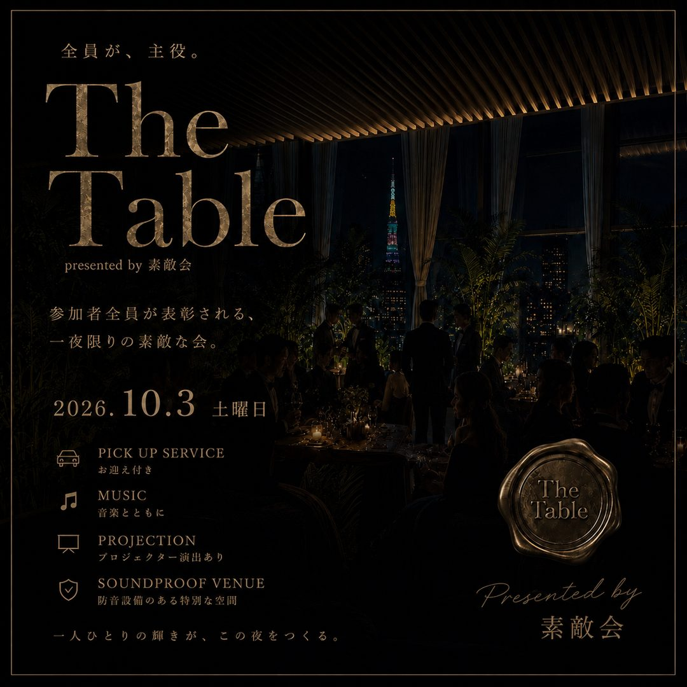
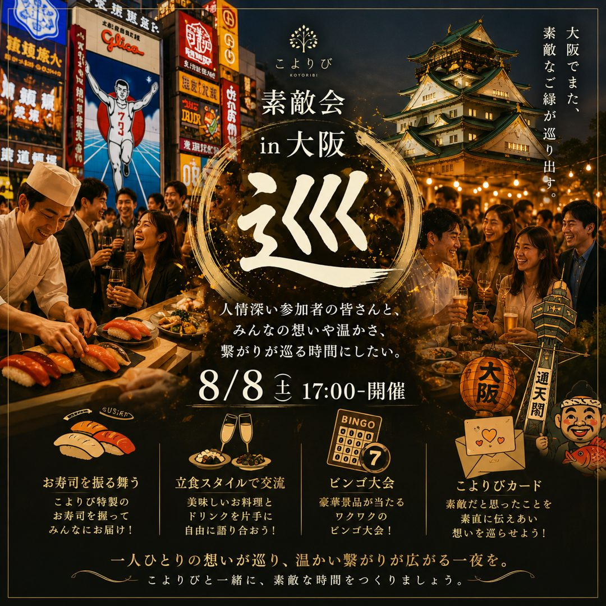

こよりび
想い
記録
読む
会員になる
Report
これまでの活動
こよりびがこれまでに開いてきた集いの記録です。
それぞれの日に何があったのかを、写真とともに残しています。
2026.11.07
素敵会「秋の縁日」
soko station 146（東京・新木場）／ 約100名

2026.10.03
The Table presented by こよりび
東京 ／ 約30名
2026.09.26
素敵会「Re-Loved Market」
代々木公園 ／ 約15名

2026.08.08
こよりび素敵会 大阪「巡」
大阪 ／ 約20名
トップへ戻る